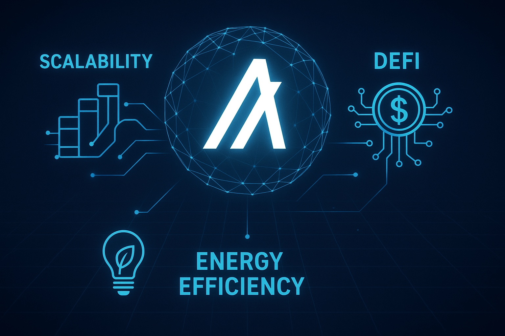

Algorand Price Outlook for End of 2025: Detailed Analysis and Market Insights
This article is for informational and educational purposes only. It does not constitute financial advice. Cryptocurrency trading carries significant risks.
Introduction
As of August 20, 2025, 01:14 AM EEST, Algorand (ALGO) trades at around $0.45, maintaining its status as a major Layer-1 blockchain recognized for scalability, security, and eco-friendly design. Created by Turing Award laureate Silvio Micali, Algorand leverages a Pure Proof-of-Stake (PPoS) consensus, delivering rapid transactions and low costs while remaining carbon-neutral. With applications across DeFi, NFTs, and tokenization of real-world assets, the ecosystem continues to expand. This article explores ALGO’s potential price range by the end of 2025, examining bullish and bearish cases, adoption factors, and possible risks shaped by current market dynamics and technological progress.
Current Situation
As of August 20, 2025, ALGO is valued at $0.45, showing a 15% rise compared to June 2025, when it traded at $0.39. Over the past 30 days, the asset demonstrated resilience, with 52% of sessions closing positive and a volatility rate of 5.1%. The Fear and Greed Index at 62 reflects a greedy sentiment, largely driven by DeFi adoption, government and institutional collaborations, and innovations such as quantum-resistant cryptography. Within the last year, ALGO climbed from $0.28 to its current price, representing a 61% gain. Since debuting in 2019 at $0.20, its value has grown 125%, supported by scalable infrastructure and sustainability goals.
Price Predictions for End of 2025
Forecasts for Algorand’s value in December 2025 depend heavily on overall market conditions. Bearish outlooks suggest a potential drop to $0.30 in case of a 30–50% correction in early 2025. Neutral projections see ALGO ranging from $0.50 to $0.80, supported by steady adoption in DeFi and institutional scenarios. Optimistic scenarios anticipate $1.00–$1.50, particularly if a rebound occurs between February and April 2025 or if major partnerships are secured. For instance, Coinpedia estimates a peak of $1.25, while DigitalCoinPrice projects an average around $0.68.
Factors Driving Price Growth
- Scalability and Speed: Algorand processes up to 6,000 transactions per second with sub-4-second finality, attracting developers and enterprises.
- DeFi and NFT Ecosystem: Expanding TVL in Algorand-based DeFi platforms and NFT markets strengthens ALGO’s practical use.
- Institutional Adoption: Collaborations with governments (such as El Salvador’s blockchain strategy) and institutions reinforce credibility.
- Sustainability: Its carbon-neutral approach appeals to environmentally aware investors and businesses.
- Market Rally: An anticipated crypto rally in early-to-mid 2025 could accelerate price appreciation.

Risks and Downward Factors
- Market Volatility: A broad 30–50% correction in early 2025 could drag ALGO’s value lower, reducing investor confidence.
- Regulatory Risks: Stricter global crypto regulations could hinder Algorand’s adoption and accessibility.
- Competition: Competing Layer-1 networks like Ethereum, Solana, and Cardano continue to challenge its market share.
- Adoption Pace: Slower-than-expected adoption by institutions or users may limit growth potential.
Volatility Analysis
Between July and August 2025, ALGO rose from $0.39 to $0.45, a 15% gain, with volatility of 5.1%, showing moderate stability versus past behavior. A yearly increase of 61% highlights solid performance. Technical indicators such as bullish momentum in 50-day and 200-day EMAs and an RSI of 59 point to further upside potential. A projected market rebound between February and April 2025 may provide additional momentum, as Algorand strengthens its footprint in DeFi, NFTs, and institutional use. Its scalable, green infrastructure continues to position it as a competitive long-term blockchain solution.

Conclusion
By late 2025, Algorand is expected to trade in the $0.50–$1.00 range, with potential highs of $1.50 in bullish conditions fueled by scalability, DeFi expansion, institutional partnerships, and sustainability. Nonetheless, investors must account for volatility, regulatory hurdles, and competition. Proper due diligence and risk management remain crucial before investing in ALGO.